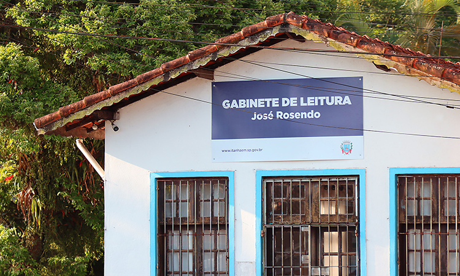

Oficinas Culturais
Formação, literatura e audiovisual.

Gabinete de Leitura José Rosendo
Um espaço histórico e respeitável dedicado à literatura, memória e ao conhecimento. O Gabinete de Leitura não é apenas uma biblioteca, mas um centro vivo que abriga lançamentos de livros, saraus e importantes reuniões culturais.
Parceria Pontos MIS: O espaço também sedia as atividades do programa Pontos MIS, trazendo para Itanhaém o melhor do cinema e da formação audiovisual, com sessões de filmes gratuitas e oficinas de capacitação artística em parceria com o Museu da Imagem e do Som.
- Praça Carlos Botelho, 149 - Centro
- Seg a Sex, das 8h às 17h